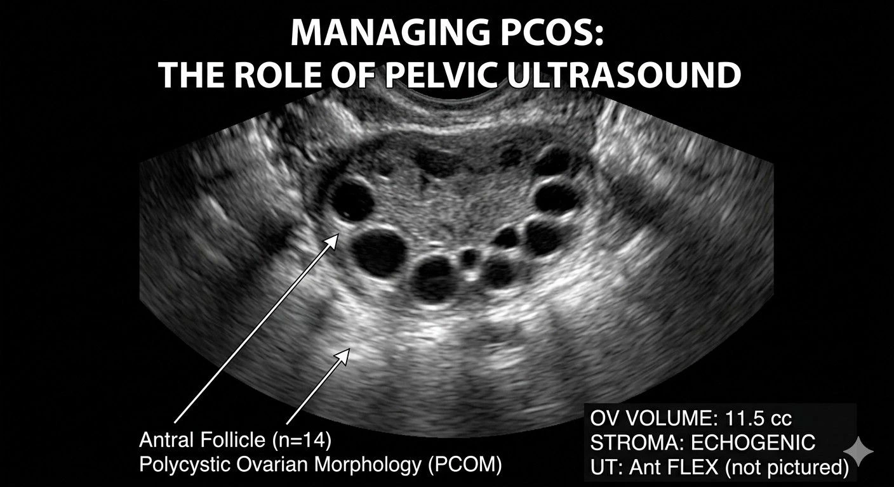
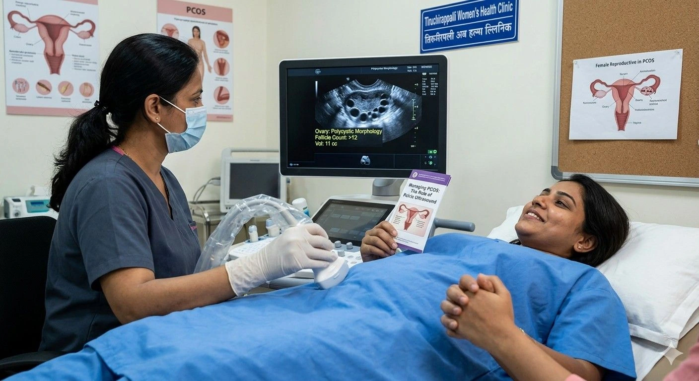

Polycystic Ovary Syndrome (PCOS) is one of the most common hormonal conditions affecting women of reproductive ageyet it often goes undiagnosed for years. If you are experiencing polycystic ovary syndrome symptoms such as irregular periods, unexplained weight gain, or hormonal imbalances, a pelvic ultrasound is one of the most important first steps toward understanding your health. At Meera 4D Scans Maduraithe best scan centre for PCOS in Maduraiour experienced sonologists provide detailed PCOS ultrasound diagnosis with same-day results and affordable pelvic ultrasound cost in Madurai.
What is PCOS?
Polycystic Ovary Syndrome is a complex hormonal and metabolic disorder in which the ovaries produce an excess of androgens (male hormones), causing small fluid-filled sacs called follicles to accumulate around the ovaries. These follicles prevent the ovaries from releasing eggs regularly, leading to irregular or absent menstrual cycles and a wide range of polycystic ovary syndrome symptoms that can affect a woman's quality of life, fertility, and long-term health.
PCOS affects approximately 1 in 10 women of childbearing age worldwide, making it the leading cause of female infertility and one of the most under-diagnosed conditions in women's health. The condition does not have a single causerather, it involves a combination of genetic predisposition, insulin resistance, and hormonal imbalance. Early and accurate PCOS ultrasound diagnosis is essential not only for managing symptoms but also for reducing the long-term risks of diabetes, cardiovascular disease, and endometrial cancer that are associated with untreated PCOS.
At Meera 4D Scans Madurai, we specialise in women's health imaging from PCOS ultrasound diagnosis to diagnostic ultrasound for irregular period causes. Our certified sonologists deliver accurate, compassionate care with results you can trust. We are proud to be the best scan centre for PCOS in Madurai with affordable, transparent pricing and same-day reports.
Polycystic Ovary Syndrome SymptomsWhat to Watch For
Polycystic ovary syndrome symptoms can vary widely from woman to woman. Some experience severe, life-disrupting symptoms while others notice only subtle changes that are easy to overlook or attribute to stress and lifestyle. Understanding what to look for is the first step toward seeking the right care. Here are the most common signs that warrant a pelvic ultrasound evaluation at Meera 4D Scans Madurai:
Hormonal & Menstrual Symptoms
- Irregular or missed periodsfewer than 8 menstrual cycles per year is a hallmark sign of PCOS
- Heavy or prolonged bleedingwhen periods do occur, they may be unusually heavy or last longer than normal
- Absence of periods (amenorrhoea)especially in younger women or after stopping contraceptive pills
- Difficulty conceivingdue to irregular or absent ovulation, PCOS is the most common cause of anovulatory infertility
- Recurrent early miscarriageslinked to hormonal imbalances and insulin resistance associated with PCOS
Physical & Metabolic Symptoms
- Excess facial or body hair (hirsutism)on the face, chin, chest, or back due to elevated androgen levels
- Acneparticularly on the face, chest, and upper back, persisting beyond teenage years
- Hair thinning or lossfrom the scalp (androgenic alopecia), resembling male-pattern baldness
- Unexplained weight gainparticularly around the abdomen, associated with insulin resistance
- Darkened skin patches (acanthosis nigricans)around the neck, groin, or armpits, a sign of insulin resistance
- Fatigue and mood changesincluding anxiety and depression, which are significantly more common in women with PCOS due to hormonal fluctuations
If you are experiencing any combination of these polycystic ovary syndrome symptoms, do not delay seeking a diagnosis. Diagnostic ultrasound for irregular period causes at Meera 4D Scans Madurai can provide clear, accurate answers quickly and affordablygiving you and your doctor the information needed to begin the right treatment plan.
How is PCOS Confirmed by Ultrasound?
How is PCOS confirmed by ultrasound? This is one of the most common questions we receive at Meera 4D Scans Madurai. A pelvic ultrasound is the single most important imaging tool in the PCOS diagnostic pathwayused alongside blood hormone tests and clinical symptom assessment to confirm the condition. Here is exactly what our sonologists look for during your scan:
What the Ultrasound Scan Reveals
| Finding | Normal | PCOS Indicator |
|---|---|---|
| Follicle count (per ovary) | Fewer than 12 follicles | 12 or more small follicles |
| Follicle size | Varied sizes, dominant follicle present | Multiple small follicles (2–9 mm) |
| Ovary volume | Less than 10 ml | Greater than 10 ml (enlarged) |
| Follicle arrangement | Scattered throughout ovary | "String of pearls" around the edge |
| Ovarian stroma | Normal echogenicity | Increased stromal echogenicity |
| Uterine lining (endometrium) | Cyclical changes visible | May be thickened due to absent ovulation |
A PCOS ultrasound diagnosis is established when these findings are present in one or both ovaries. Crucially, it is not sufficient on its ownthe Rotterdam Criteria, widely used internationally, require at least two of three features: irregular periods, clinical or biochemical signs of excess androgens, and polycystic ovarian morphology on ultrasound. This means a PCOS ultrasound diagnosis must always be interpreted alongside your hormone blood test results and clinical symptoms by your doctor or gynaecologist.

Can Ultrasound Detect PCOS if Periods Are Regular?
A very common concern is: can ultrasound detect PCOS if periods are regular? The answer is yesand this surprises many women who assume that regular periods mean their hormones and ovaries are normal.
Some women have polycystic-appearing ovaries visible on ultrasound without experiencing irregular periods. This is called Polycystic Ovarian Morphology (PCOM) a finding that does not automatically mean a full PCOS diagnosis, but one that warrants further evaluation including hormone blood tests. Conversely, some women with completely regular cycles still have elevated androgen levels and other polycystic ovary syndrome symptoms such as acne, hair thinning, or difficulty conceivingall of which a pelvic ultrasound helps investigate comprehensively.
PCOM vs PCOSKey Differences
- PCOM (Polycystic Ovarian Morphology) polycystic-looking ovaries visible on ultrasound, but without associated hormonal or menstrual symptoms. Not the same as PCOS.
- PCOS (Polycystic Ovary Syndrome) polycystic ovaries on ultrasound PLUS at least one other diagnostic criterion such as irregular periods or elevated androgen levels (as per Rotterdam Criteria)
- Regular periods do not rule out PCOS a subset of women with PCOS have what is called ovulatory PCOS, where cycles appear regular but hormonal and metabolic features are present
- Always consult your doctorfor a complete clinical, hormonal, and ultrasound assessment rather than relying on any single test
At Meera 4D Scans Madurai, can ultrasound detect PCOS if periods are regular?the answer is yes. Our detailed pelvic scans are specifically designed to identify ovarian morphology changes even in women with no obvious menstrual irregularities. Our comprehensive reports give your doctor everything needed to make an informed, accurate diagnosis and plan the right treatment.
Diagnostic Ultrasound for Irregular Period Causes
Diagnostic ultrasound for irregular period causes goes far beyond PCOS alone. Many women seeking answers about menstrual irregularities are surprised to learn how much a single pelvic ultrasound can reveal. At Meera 4D Scans Madurai, our pelvic ultrasound is a comprehensive investigation that systematically assesses the uterus, ovaries, endometrium, and pelvic structures to identify a full range of conditions responsible for irregular periods:
Other Conditions Identified by Pelvic Ultrasound
- Uterine fibroids non-cancerous muscular growths within or on the uterine wall that can cause heavy, painful, or irregular bleeding
- Ovarian cysts fluid-filled sacs on the ovaries that may disrupt ovulation and the menstrual cycle, ranging from simple functional cysts to complex pathological ones
- Endometriosis tissue similar to the uterine lining growing outside the uterus, often causing painful, heavy, and irregular periods alongside pelvic pain
- Uterine polyps small benign growths on the inner lining of the uterus (endometrial polyps) that can cause spotting, heavy bleeding, and irregular cycles
- Adenomyosis a condition where endometrial tissue grows into the muscular wall of the uterus, causing the uterus to enlarge and periods to become heavy and painful
- Structural abnormalitiessuch as a bicornuate, septate, or arcuate uterus, which can affect menstrual flow and fertility
- Premature ovarian insufficiencyreduced ovarian reserve visible on ultrasound through antral follicle count, causing irregular or absent periods
Diagnostic ultrasound for irregular period causes is one of the most powerful and cost-effective tools available in women's health. A single pelvic ultrasound scan at Meera 4D Scans Madurai can help your doctor accurately identify the root cause of your symptoms, avoiding unnecessary delays in diagnosis and guiding the most appropriate treatment plan for your individual needs.

What Happens During a Pelvic Ultrasound at Meera 4D Scans?
When you visit Meera 4D Scans Madurai for a pelvic ultrasound for PCOS or diagnostic ultrasound for irregular period causes, here is what to expect at every stage of your visit:
Arrival & Registration
You arrive at Meera 4D Scans Madurai and complete a quick registration. Our team ensures a private, comfortable, and fully professional environment for all women's health scans. Your medical history and any previous scan reports are reviewed to personalise your assessment.
Preparation
For a transabdominal pelvic ultrasound, a comfortably full bladder is requireddrink 4–6 glasses of water one hour before your appointment and do not urinate. For a transvaginal scan, an empty bladder is preferred. Our team will advise you on which type is most appropriate for your clinical needs.
The Pelvic Ultrasound Scan
You lie comfortably while our experienced sonologist performs the scan. The transabdominal scan uses a smooth probe on the abdomen with warm gel applied. A transvaginal scan uses a thin, gentle probe for a more detailed and higher-resolution view of the ovaries, uterus, and endometrium.
Ovarian & Uterine Assessment
Our sonologist carefully measures ovary volume, counts antral follicles, assesses follicle arrangement and stromal echogenicity, evaluates the uterine lining thickness, and checks for any structural abnormalities giving your doctor all the data needed for a complete PCOS evaluation and broader women's health assessment.
Same Day Detailed Report
At Meera 4D Scans Madurai, you receive your complete pelvic ultrasound report on the same daya detailed, structured document ready to share with your gynaecologist or doctor for immediate follow-up and treatment planning.
How to Prepare for Your Pelvic Ultrasound
Once you book your pelvic ultrasound scan at Meera 4D Scans Madurai, our team will confirm all preparation instructions. Many patients also ask us can ultrasound detect PCOS if periods are regularthe answer is yes, and booking early means earlier answers. General guidelines include:
- Full bladder for transabdominal scandrink 4–6 glasses of water 1 hour before, do not urinate until after the scan
- Empty bladder for transvaginal scanyour sonologist will advise which type is recommended for your specific situation
- Timing in your cycle ideally performed on day 2–5 of your menstrual cycle for the most accurate PCOS follicle count, though it can be performed at any time if symptoms are present
- Bring previous scan reportsany prior ultrasound, blood test, or hormonal results help our team provide a thorough, comparative assessment
- Wear comfortable clothingloose, two-piece clothing allows easy access to the lower abdomen for the scan
- No special fasting requiredeat and drink normally unless specifically advised otherwise by our team
Pelvic Ultrasound Cost in MaduraiAffordable at Meera 4D Scans
A key concern for many patients is the pelvic ultrasound cost in Madurai. At Meera 4D Scans Madurai, we firmly believe that every woman deserves access to high-quality diagnostic care without financial worry. Our pelvic ultrasound cost in Madurai is among the most competitive in the citywith fully transparent pricing, no hidden charges, and no surprise fees at checkout.
The pelvic ultrasound cost in Madurai at Meera 4D Scans covers a comprehensive examination including both transabdominal and transvaginal assessment where clinically required, a full written report, and same-day results. Many patients ask us how is PCOS confirmed by ultrasound before bookingour sonologists are always happy to explain the process and answer your questions during registration. Whether you are visiting for a PCOS ultrasound diagnosis, diagnostic ultrasound for irregular period causes, fertility evaluation, or a routine women's health check, our affordable scan packages are thoughtfully designed to suit every budget. Contact us today or book online for the latest pricing and availabilitysame-day appointments are often available.
Why Meera 4D Scans is the Best Scan Centre for PCOS in Madurai
Meera 4D Scans Madurai is widely trusted as the best scan centre for PCOS in Madurai. Here is why thousands of women across Madurai choose us for their pelvic ultrasound and women's health imaging needs:
- Advanced high-resolution ultrasound technologydelivering the clearest possible ovarian and uterine images for accurate PCOS assessment
- Experienced certified sonologists specialised in women's health imaging and gynaecological ultrasound
- Detailed same-day reportsstructured, comprehensive documents ready for your gynaecologist immediately after your scan
- Private and comfortable environmentrespectful, dignified care for every patient at every stage of their health journey
- Affordable pelvic ultrasound cost in Maduraitransparent pricing with no hidden charges, designed to make quality care accessible for all
- Trusted by 10,000+ women in Madurai for diagnostic, pregnancy, and women's health scans
If you are experiencing polycystic ovary syndrome symptoms, irregular periods, difficulty conceiving, or are wondering can ultrasound detect PCOS if periods are regularthe answer is yes, and our team is here to help. Do not wait. Book your pelvic ultrasound scan today at Meera 4D Scans Madurai the best scan centre for PCOS in Maduraiand get the clear, accurate answers you deserve from a team that truly cares.
Useful Resources
These trusted health and medical resources provide additional information about PCOS, pelvic ultrasound, and women's reproductive health.
-
WHOPolycystic Ovary Syndrome Fact Sheet World Health Organization overview of PCOS, its global prevalence, polycystic ovary syndrome symptoms, and management approaches.
-
National Health Portal IndiaPCOD / PCOS India's official health portal covering PCOS diagnosis, treatment, and women's reproductive health guidelines.
-
NCBIPolycystic Ovarian Disease Research Peer-reviewed clinical research on PCOS ultrasound diagnosis criteria, ovarian morphology, and diagnostic guidelines.